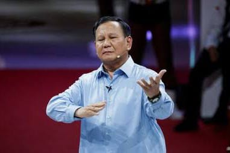

Prabowo Subianto Djojohadikusumo (EYD: Prabowo Subianto Joyohadikusumo, born 17 October 1951) is an Indonesian politician, businessman and retired honorary army general who is the president-elect of Indonesia and current Minister of Defense.[1] Prabowo will be Indonesia's third president who had military background after Suharto and Susilo Bambang Yudhoyono (SBY). He has been described as a right-wing nationalist.[2][3][4]
Prabowo Subianto graduated from the Indonesian Military Academy (Akademi Militer Nasional) in 1970 and mostly served in the Special Forces (Kopassus) until he was appointed to lead the Strategic Reserve Command (Kostrad) in 1998. In that same year, he was discharged from the military and subsequently banned from entering the United States for allegedly committing human rights abuses.[5][6][7][8][9]